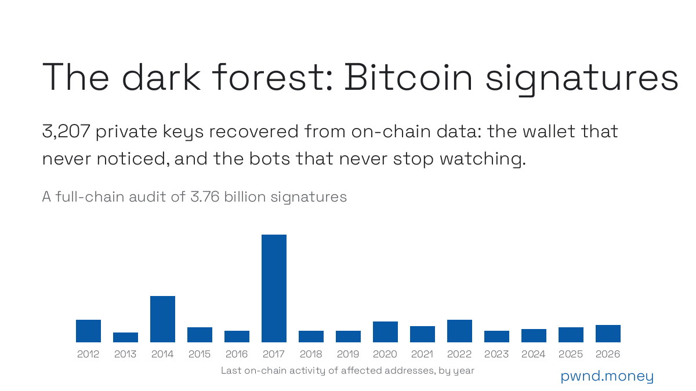

The dark forest: Bitcoin signatures
I scanned every signature ever confirmed on the Bitcoin blockchain, 3.76 billion of them from 1.41 billion transactions, and recovered 3,207 private keys from on-chain data alone. Each key was verified against its on-chain public key. No private keys are stored anywhere, and every affected address was empty at the snapshot. These are the interesting finds.
In Liu Cixin's dark forest, any civilization that reveals its position invites a strike from unseen hunters. An exposed Bitcoin key works the same way. Every key below was a light in the trees, and something was always watching.

The short version
- 475 nonce-reuse findings, each cryptographically proven, across 432 addresses.
- 3,207 private keys in total once transitive and cross-key leaks are counted.
- 2,354.29 BTC moved out of affected addresses after their keys became publicly computable.
- 0 BTC remained in any affected address at the snapshot. The watchers see to that: deposits to known-weak keys are swept within minutes.
The wallet that never noticed
The largest spent-after-exposure case looks like an owner who never knew. On 2013-02-12, the
wallet at 1BMzWp77j7x3GKDYNbCP3df7YG3UEw1vVE
signed two inputs of one
transaction with the same nonce. From that block on, anyone could compute its key.
Nobody took anything. The wallet simply kept operating: 533.82 BTC spent four days later, about 1,930.26 BTC over the following weeks, 6,622.25 BTC across its lifetime. The activity before and after the leak is one continuous pattern, almost certainly the owner's own. It was last seen spending 9,749 sats in December 2025.
This single address accounts for 82% of the audit's 2,354 BTC spent-after-exposure total, and it anchors what that figure really means: value that was in motion while the key was public, not proof of theft. The loudest light in the forest, and no shot ever came.
One nonce, 2.55 million signatures
The most reused nonce in chain history is the constant k = (n−1)/2, whose
signature fingerprint r starts 0000…3b78ce…. In July 2015 it was a
dust-sweep trick: that k produces the shortest possible DER encoding, which saved fees. But
because k is a known constant, a single such signature is enough to expose the signer's key.
A full census recovered and verified 1,956 distinct private keys from 2,552,742 signatures, including 1,034 keys that signed only once. Evidence: an early cluster transaction and a November 2024 puzzle transaction. The main pipeline nearly missed this cluster: it sampled groups with more than 200 members, assuming giants were protocol artifacts. This one was real.
People really used sha256("password")
A 14.34-million-word dictionary of brainwallets (password hashed once with SHA-256 to make a
private key) hit 6,439 passwords covering 6,367 funded addresses. Someone really used
sha256("password").
Also funded: sha256("correct horse battery staple")
and sha256("satoshi nakamoto").
Keys you can count to
26 funded addresses have private keys equal to Unix timestamps from 2009 to 2029. One is a date in February 2009, weeks after Bitcoin launched. Another, a March 2010 date, received 7.21 BTC.
369 distinct keys are integers below 224, including the 2015 puzzle keys. The
smallest, d = 1, backs both
1EHNa6Q4Jz2uvNExL497mE43ikXhwF6kZm
and, not coincidentally, the BIP-173 specification's
example
bech32 address. It was still receiving dust the week of the snapshot; watcher bots sweep
every deposit within minutes.
Keys posted as public data
5,095 distinct private keys were found sitting in the chain as data: OP_RETURNs, test
strings, puzzle material. One
transaction embeds sha256("") as a key, and that key controls a funded
address.
Stranger corners
- 71,863 SIGHASH_SINGLE signatures signed the constant
z = 1and can be replayed against another UTXO of the same key. One address has 7 of them. - 287 signatures from at least 46 keys used
k = 1(example); 336 used|k| ≤ 224; one usedk = d, its own private key as the nonce, in block 450,655. - Every signature's r was matched against the x-coordinate of all 135.7 million on-chain public keys. One 2020 spend signed with a nonce that was a 2015-compromised key's private scalar.
- In a 2,000,000-key sample, 24 more keys fell without any plain reuse: 13 had signed twice with one identical nonce, 7 had nonces differing by exactly 1, and 4 had nonces short enough to fall to a lattice (HNP) attack.
What held up
Taproot and Schnorr are clean: no same-key nonce reuse, no key-path k = d across
352 million outputs. Mainstream wallets, which derive nonces deterministically (RFC 6979), do
not appear anywhere in these findings.
That is also why the July 2026 Coldcard entropy flaw is not in this audit: those keys leaked at generation time, before any signature existed, so they leave no signature-level trace. Wizardsardine's incident report reconstructs that flaw; related findings will be published separately.
So were the coins stolen?
Unknown, and unknowable from chain data. 2,354.29 BTC moved out of affected addresses after their keys became publicly computable, and another 255.74 BTC moved inside the exposure blocks themselves. Some of that was certainly owners spending as usual, as the wallet that never noticed shows. What can be said: every affected address was empty at the snapshot, and anything sent to one today is swept by bots within minutes.
Two related curiosities are not spendable by key recovery alone: 17.24 BTC in a 3-of-5 multisig whose fourth key leaked (spending still requires three signatures), and 18 hashlocked outputs whose preimages are public but whose spend paths still need an uncompromised signature.
The hunters are always watching
Every address in this audit is a set of published coordinates, and the hunters never log off. Automated watchers monitor weak-key addresses around the clock: the moment a deposit confirms, a bot broadcasts a spend, and when several bots compete they outbid each other's fees until the miner takes most of it. Deposit to gone: typically minutes. That is why every affected address reads zero, and why sending "just a little, to test" to one donates it to the fastest bot.
The BIP-173 example address, whose key is the integer 1, was still receiving dust the week of the snapshot; watcher bots sweep every deposit within minutes. There is no size floor either: the smallest listed post-exposure spend in the audit is a single satoshi.
Why this keeps happening
Every few years, broken randomness or broken conventions light another batch of lights:
- 2013: Android's SecureRandom flaw produced colliding nonces (bitcoin.org alert).
- 2015: the 1,000 BTC puzzle (announcement) and Castellucci's brainwallet-cracking talk.
- 2019: ISE's Ethercombing finds the "Blockchain Bandit" (paper).
- 2023: Milk Sad's broken
bx seed(CVE-2023-39910) and Randstorm's weak browser wallets (Unciphered). - 2024: Dark Skippy, seed exfiltration inside signatures (disclosure).
- 2026: the Coldcard entropy flaw (incident report).
Method and disclosure
The scan processed 760 GB of chain data in about 30 minutes. Every reported key was recovered in memory and verified against the on-chain public key; no private keys are stored in any artifact. Balances came from a local chain scan and transaction index, matched against the node's UTXO set with zero mismatches. The full address table, the CSV, and the precise figure definitions are in the audit report.
If your address appears in the table, treat the key as public knowledge: never send funds to it again. The forest does not forget a light.